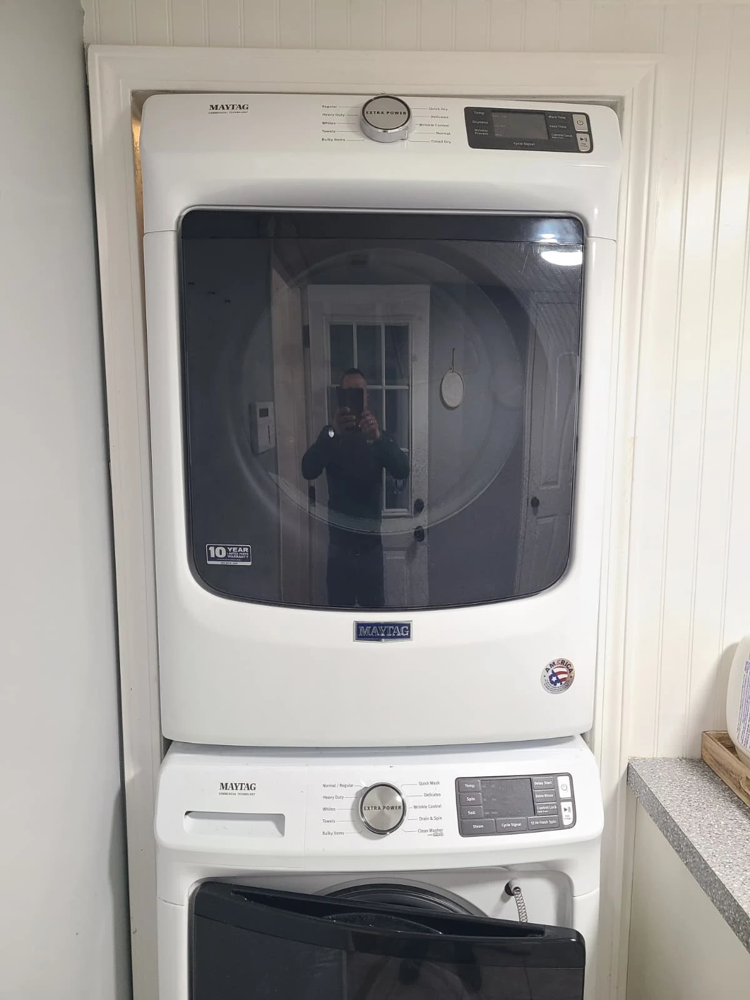
A Stacked Maytag Dryer With No Heat
A homeowner in Fishers, Indiana, contacted Alex Appliance Repair because their Maytag dryer was not heating. The electric dryer was installed above the matching washer in a stacked laundry setup.
The repair addressed a burned-out heating element. During the same visit, we also replaced four drum support rollers and the belt idler pulley, and vacuumed the interior. After reassembly and testing, the dryer heated again.
Identifying the Dryer: Maytag MED5630HW2
The original appliance label identifies the dryer as Maytag MED5630HW2. This close-up is cropped from the service photograph to show the brand and full model number.
The two parts diagrams in the visit overview show the heater, drum supports and drive components involved in this repair. They accompany the actual service photographs below.
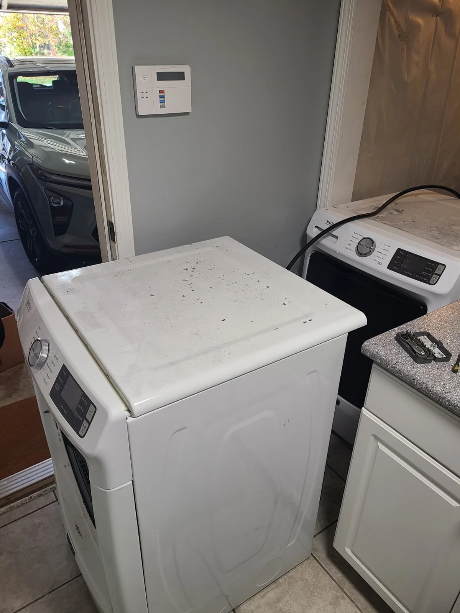
Accessing the Stacked Dryer for Service
The dryer was taken down from above the washer and moved into position for service. The photographs document the stacked installation, the access needed for the repair and the machine as it was opened.
After opening the cabinet, the drum was removed to access the heater and the drum-support and drive components. The dryer was returned to its stacked position after the work was completed.
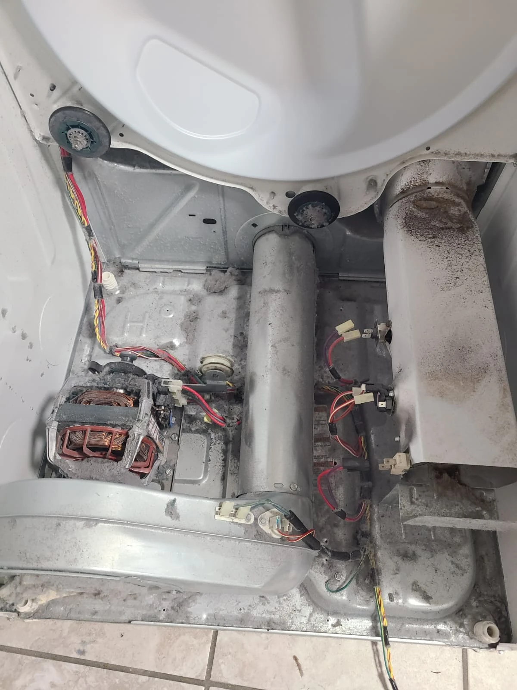
Inspection With the Drum Removed
With the drum out, the technician could reach the heating assembly, rollers and idler pulley. Lint and dust were visible on the cabinet base and around the internal components.
This image records the condition before vacuuming. The lint was removed as part of the service, but its presence alone does not establish why the heating element failed.
The No-Heat Fault: A Burned-Out Heating Element
The diagnosis on this dryer was a burned-out heating element. The close-up of the removed part shows a break in the coil. We replaced the failed element; the second photograph shows the replacement inside the heater housing.
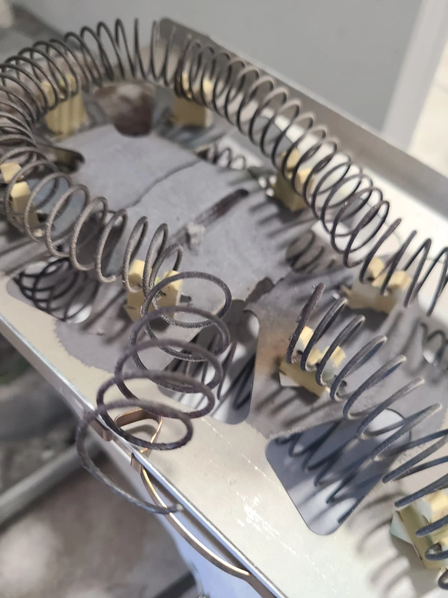
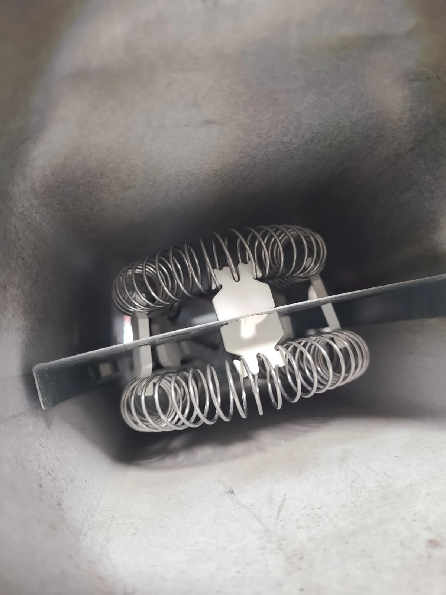
The heating element was the component responsible for the confirmed no-heat fault in this case. The roller and idler replacements were additional work performed while the dryer was apart, not the explanation for the missing heat.
Four New Drum Support Rollers: Two Rear and Two Front
We replaced all four drum support rollers: two at the rear and two at the front. The photographs below show the rear support area before the work and the two replacement rear rollers installed afterward.
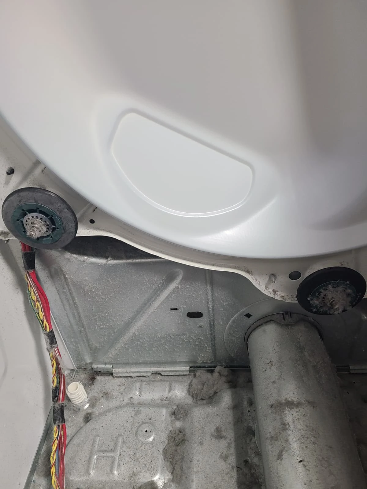
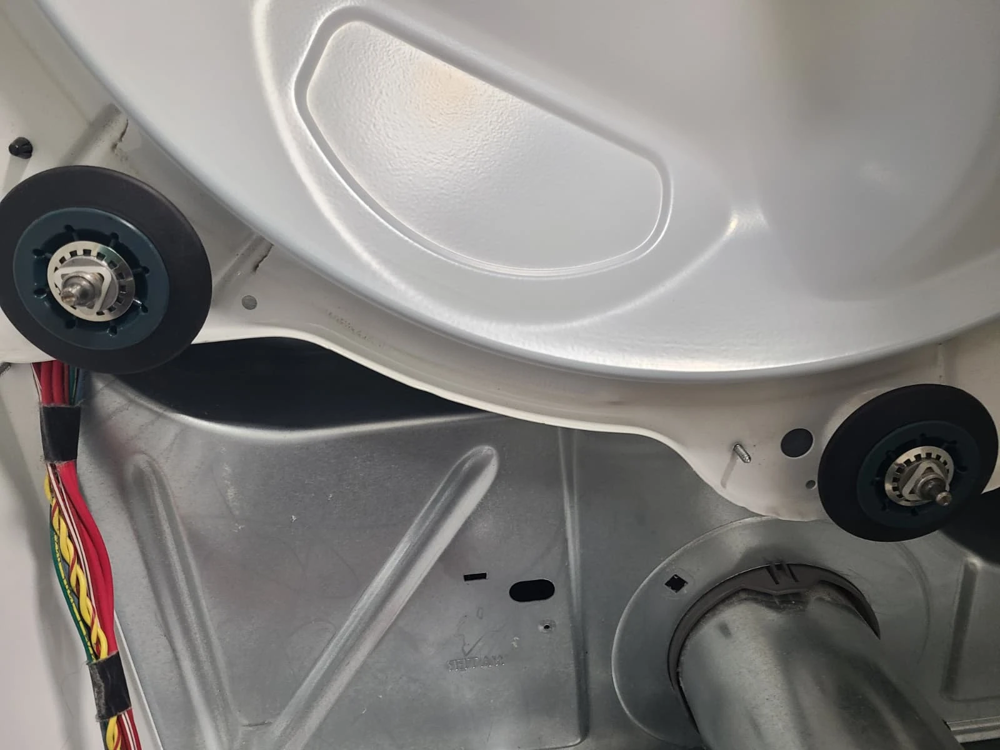
The drum-and-heater diagram in the overview shows both front and rear support locations. The rear photographs illustrate part of the completed roller replacement, rather than showing all four rollers in a single view.
Replacing the Belt Idler Pulley
The belt idler pulley assembly was also replaced. One photograph shows the removed assembly beside its replacement; the next shows the replacement installed next to the motor.
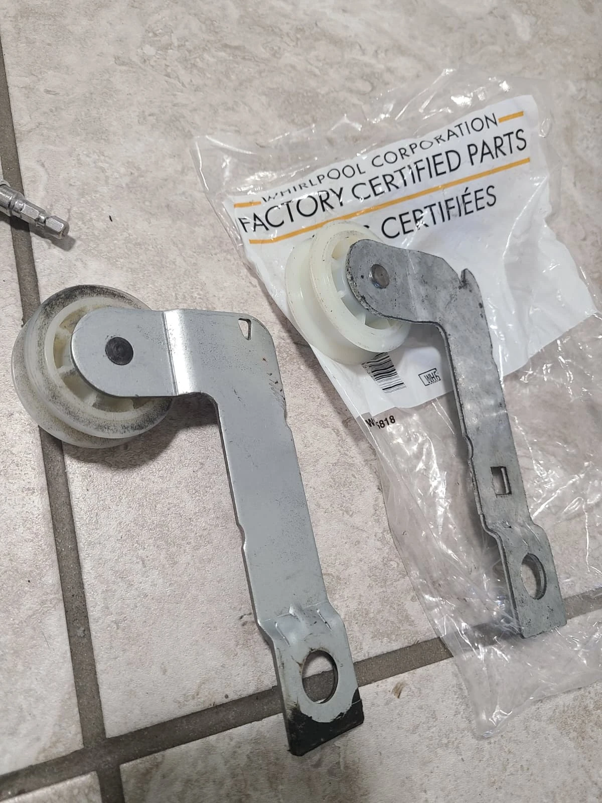
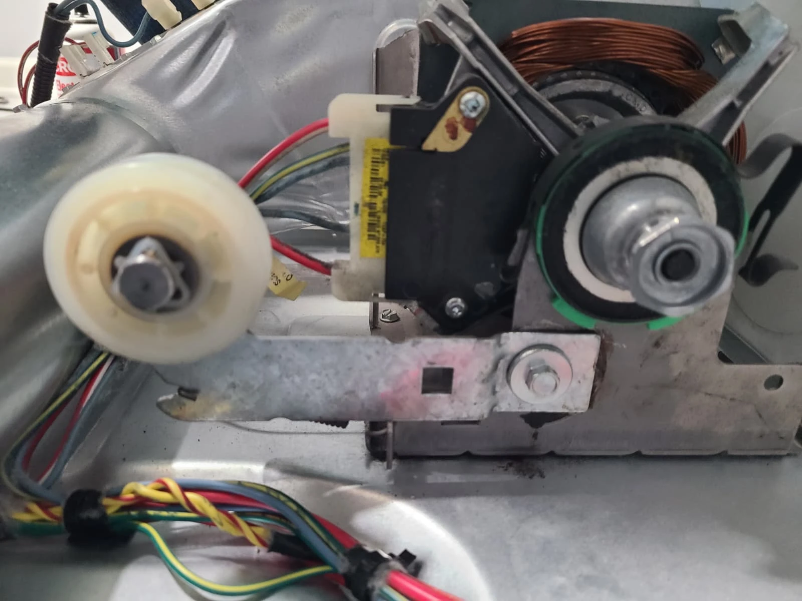
This service included the idler pulley, not a reported belt replacement. Together with the four new drum rollers, it completed the drive and support component work during this visit.
Vacuuming Lint From the Dryer Interior
We vacuumed the dryer interior while the drum and cabinet panels were removed. The service photographs show lint in the internal duct and the cleaned cabinet before reassembly.
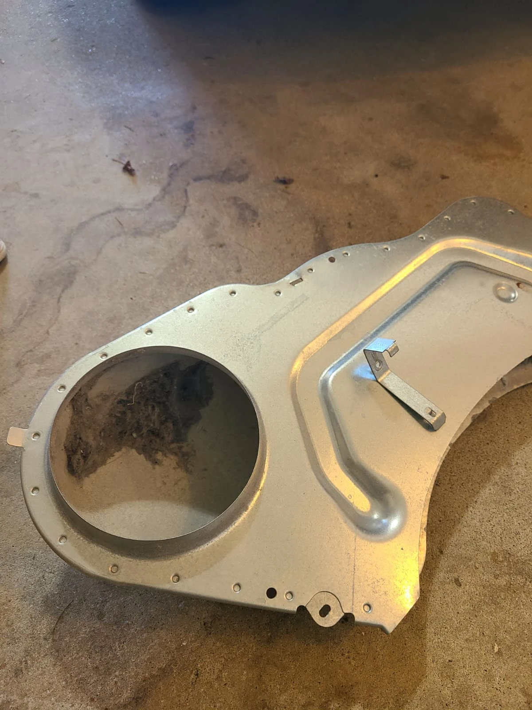
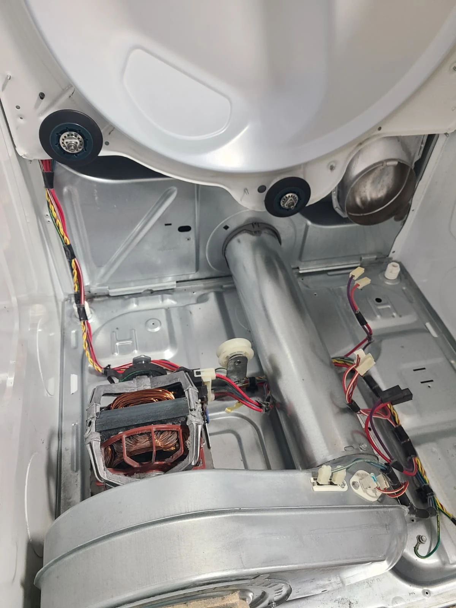
This was internal dryer cleaning. The repair record does not include cleaning the home's separate exhaust vent, and the photographs should not be taken as a claim that an exterior vent-cleaning service was performed.
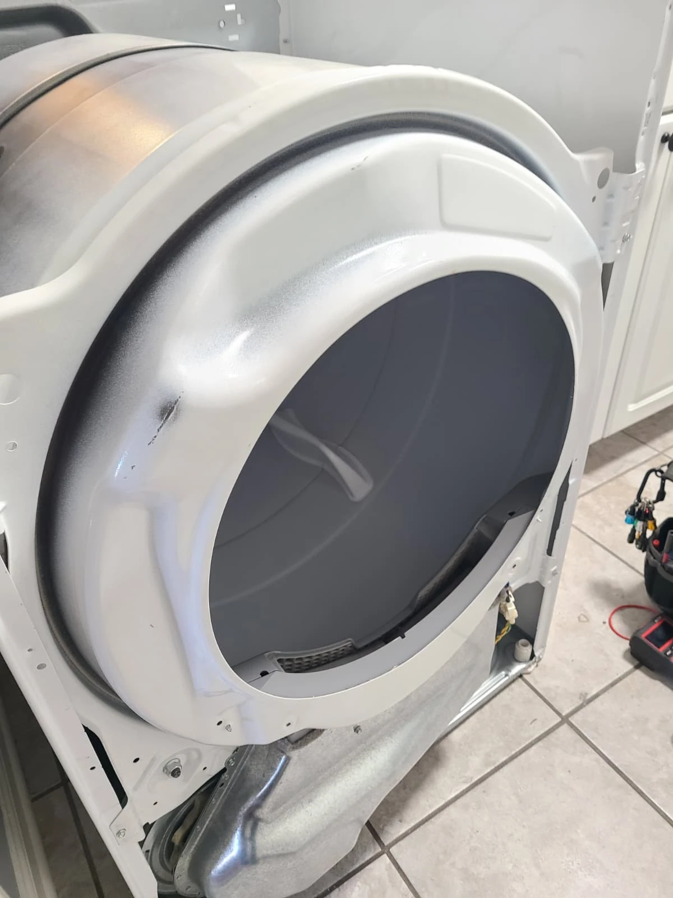
Reassembly After the Component Replacements
After the heating element, four rollers and idler pulley had been replaced and the interior vacuumed, the drum was put back into position and the dryer was reassembled.
This photograph shows an intermediate stage with the outer front still off. The machine was fully assembled before its final operating test.
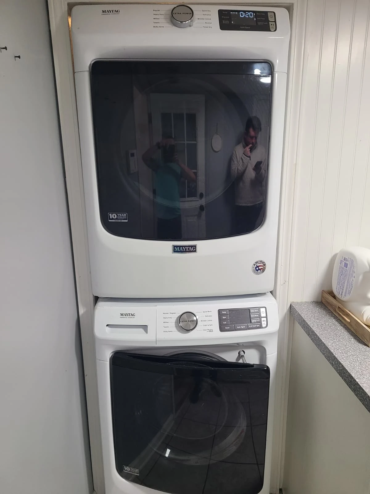
Final Test: Heating Restored
The completed dryer was returned above the washer and tested. It worked properly and heat was restored, resolving the original no-heat complaint.
The finished service included heating element replacement, four drum support rollers, a belt idler pulley and interior vacuuming. The original photographs document the installation, failed coil, replacement components and reassembly.
Questions About This Maytag Dryer Repair
Why was this MED5630HW2 dryer not heating?
The technician diagnosed a burned-out heating element. The removed coil had a visible break, and heat was restored after replacement and reassembly.
Were all four drum rollers replaced?
Yes. Two rear and two front drum support rollers were replaced, along with the belt idler pulley.
Did the stacked installation affect access?
Yes. This dryer was removed from above the washer for service and returned to its stacked position afterward.
Does every Maytag dryer with no heat need a new element?
This article records one confirmed diagnosis. A similar symptom on another dryer needs its own diagnosis before parts are selected.
Maytag Dryer Repair in Fishers, Indiana
For a dryer that is not heating, contact Alex Appliance Repair for dryer repair in Fishers. Share the model number, describe the symptom and mention whether the dryer is stacked so the installation is clear when arranging service.
See our dryer repair services, Fishers service coverage and more repair stories with original service photographs.
Alex Appliance Repair is an independent appliance repair service operated by Aksenov LLC. Call (463) 248-8429 to discuss your appliance.
Book dryer repair in Fishers